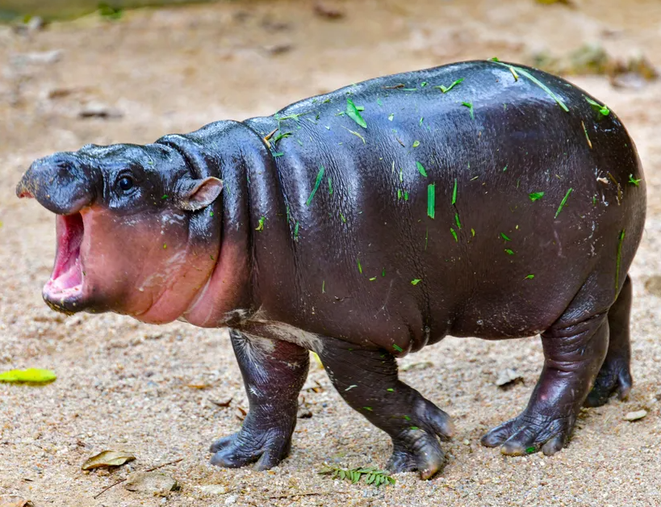

How I met Milo
- Tidal Restoration – Moo Deng can summon the healing power of the river itself, channeling water to mend wounds and restore vitality. By calling forth a gentle tidal wave, she can create a healing flow that envelops allies, washing away physical injuries, fatigue, and toxins. The water’s soothing energy accelerates regeneration, allowing her to heal even the most grievous of wounds. The healing properties of Tidal Restoration are amplified when Moo Deng is near her river home, but she can invoke this ability anywhere, creating temporary pools of restorative water to aid her allies.
- Aquatic Cocoon – Using her mastery over water, Moo Deng can envelop injured allies in a cocoon of swirling, sacred water. This cocoon acts as both a protective shield and a restorative sanctuary. Within the cocoon, the wounded are shielded from harm while their bodies are rapidly healed by the flowing water. The cocoon also purifies any poison or dark magic affecting the ally, dispelling curses and toxins. The cocoon's protective barrier is formidable, as it can absorb and redirect harmful attacks, leaving the enemy frustrated and the healed ally ready to return to the fight.
- Rivers of Life – Moo Deng has the ability to call upon the ancient power of the Silverbend River to revive fallen allies. When an ally is critically wounded or killed, she can use this ultimate ability to summon a flood of life-giving waters from the river, restoring the spirit and body of the fallen. The river’s power brings them back, not just from death, but in their prime, with enhanced strength and vitality for a brief period. However, this power is not without its cost; the river demands balance, and using Rivers of Life can drain Moo Deng’s energy, leaving her temporarily weakened until she can restore her strength. Despite this, the ability is a vital tool in keeping her team in the fight against darkness.
My Story
Moo Deng was a free-spirited, sassy little hippo who lived in the sun-dappled rivers of Eldermoor’s outskirts. With her lush, lavender-colored hide and a knack for making waves—both literal and figurative—she was as known for her sharp tongue as she was for her control over water. Growing up near the tranquil waters of the Silverbend River, Moo Deng lived a life of joyful independence, always playing pranks on the local wildlife and weaving spells of water to entertain herself. She loved the freedom of the river, where no one could tell her what to do, and the feeling of splashing through the current, her big, round form effortlessly drifting along. Her mischievous ways and brash attitude kept most animals at a distance, though she didn’t mind. In fact, she rather liked being alone, her only true companions being the swift river creatures who kept her company in her little corner of Eldermoor. However, everything changed the day a great flood struck, the result of Grumpy Cat’s attempt to twist the forces of nature and bring chaos to the peaceful kingdom. As the riverbanks began to rise and water surged, threatening the safety of the village, Moo Deng was drawn to the turmoil, not out of duty but out of sheer curiosity. She had never seen so much chaos in her life, and the sight of the flood waters both excited and concerned her. It was there that she first met Milo, the small dog who had already become a legend for his bravery in the face of darkness. At first, she only observed him from afar—this scrappy little dog, rallying the villagers, fighting back the flood, and trying to maintain order amidst the madness. His courage struck a chord in her, though she would never admit it. She could see the glimmer of something deeper in him, something that matched her own sense of untamed freedom. But it wasn’t until she saw him almost drown, swept away by the rising tide, that Moo Deng’s heart—stubborn and unyielding as it was—finally softened. Without thinking, she charged into the water, her massive form cutting through the current with ease. With a few swipes of her powerful tail, she created a safe channel, pulling Milo from the floodwaters and saving his life. As he coughed up the river water and looked up at her with gratitude in his eyes, something clicked between them. In that moment, Moo Deng’s usual sass was replaced with a soft, tender side she never knew she had. From then on, their bond grew stronger. Milo admired her bravery and strength, while Moo Deng found herself captivated by his steadfast heart and determination to protect the village. Despite their differences—his refined sense of duty and her playful nature—the two of them complemented each other perfectly. They began to share adventures, facing darkness and danger together, with Moo Deng’s boldness and Milo’s unwavering courage guiding them through every trial. Their love blossomed slowly but surely, an undeniable force that carried them through even the darkest of times. Moo Deng may have been the sassy, independent hippo who once lived for herself, but with Milo, she found a love as deep and enduring as the river itself.
The Water Healer
Moo Deng